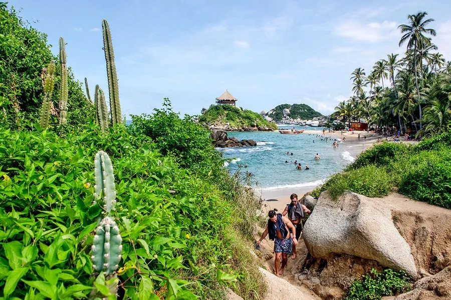

Tayrona · Colombia
Parque Nacional Natural Tayrona is een van de meest betoverende nationale parken van Zuid-Amerika — een uniek samenkomen van junglelandschap en Caribische kust. Dichte tropische wouden hellen af tot afgelegen, bruisende stranden waar de jungle en zee letterlijk samenkomen.
Het park is verdeeld in meerdere sectoren met wandelroutes. Cabo San Juan del Guía is het meest iconische bestemming: een baai omgeven door jungleheuvels met twee stranden — een rustige baai voor zwemmen en een ruiger strand voor de golven. De wandeling erheen (±2u vanuit de ingang) door jungle is op zichzelf al bijzonder.

Parque Nacional Natural Tayrona, one of Colombia’s most-visited national parks, takes up an immense chunk of the Caribbean coastline and is characterized by giant boulders bookending palm-fringed inlets with golden sand tumbling under the waves. The park is 30 to 45 minutes east of Santa Marta by bus from the Mercado Público.
Colombia's unspoiled tropical wilderness, Parque Nacional Natural Tayrona, a 45-minute drive east of Santa Marta, is best known for its sensational beaches, with lush jungle running right down to the sand. Arriving at the main entrance at El Zaíno, vans run 5km to Cañaveral, where the beach is ideal for sunbathing. From here trails weave through jungle to a succession of stunning beaches: Arrecifes, Cabo San Juan and La Piscina — each more beautiful than the last. The park opens daily from 8am to 5pm; only 6900 visitors per day are admitted, so arrive early in high season.
• Gelekoortsvaccinatiebewijs meenemen — wordt gevraagd aan de ingang. Het park is open op jullie dagen (sluitingen: 1–15 feb, 1–15 juni, 19 okt–2 nov)
• Neem je paspoort mee — vereist voor toegang tot het nationaal park
• Draag goede wandelschoenen voor het jungle-pad naar Cabo San Juan
• Kaap San Juan heeft een klein restaurant/bar — breng cash mee
• Gebruik bioreafbreekbare zonnebrand — vereist in het park
• De rustiger stranden (Playa Cristal, Cañaveral) zijn goed voor zwemmen; Cabo San Juan voor de sfeer